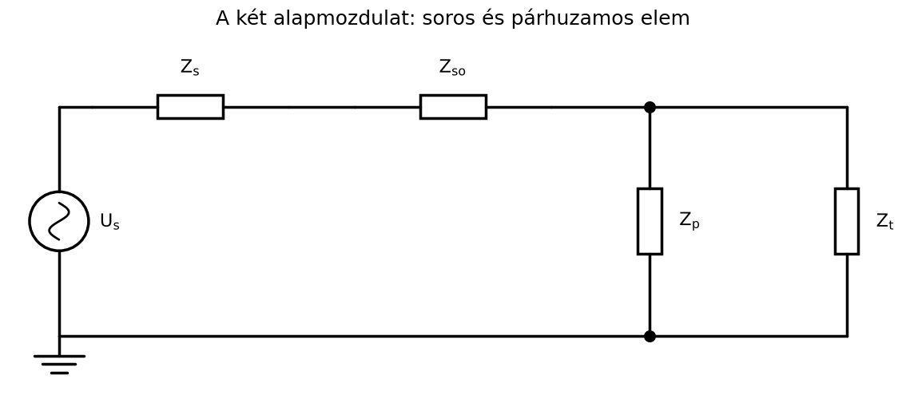
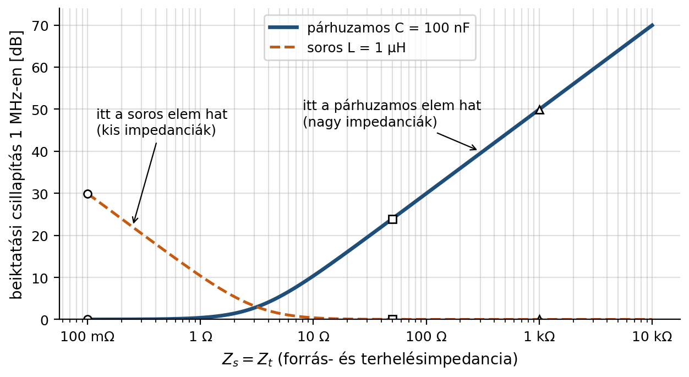
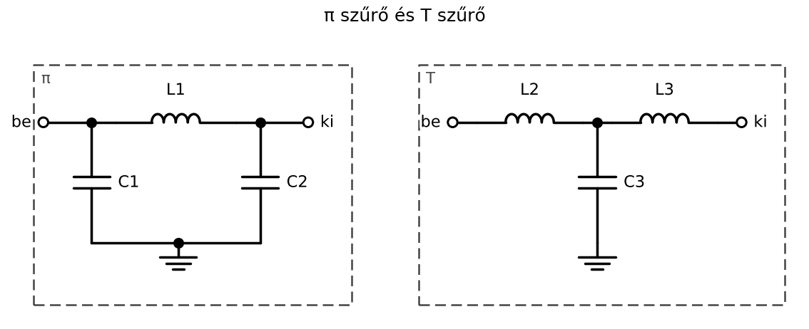
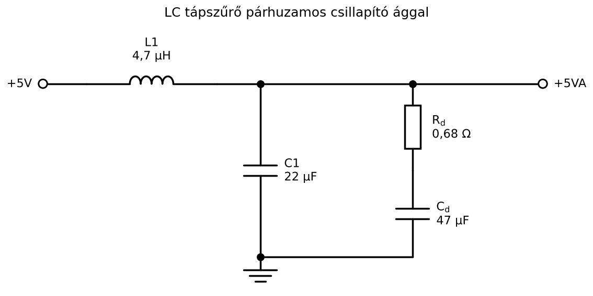
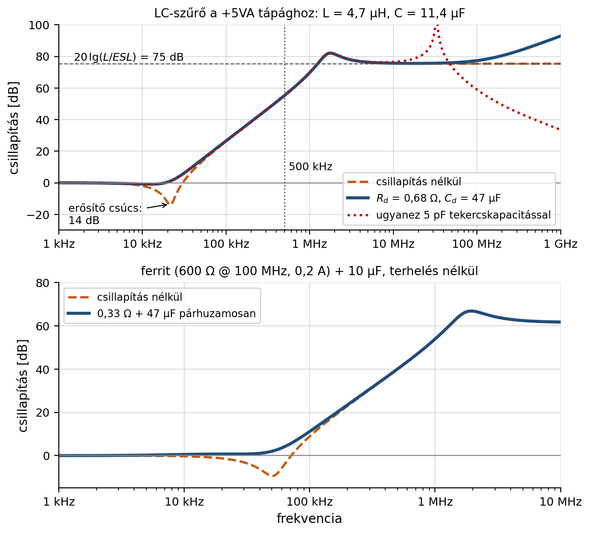
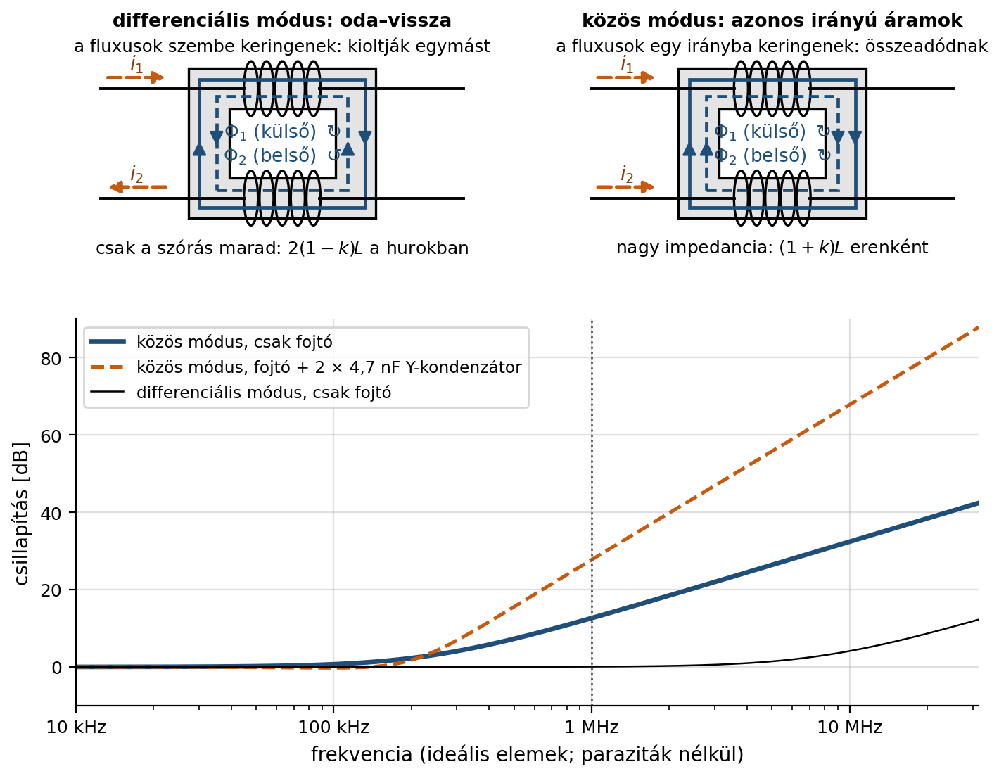
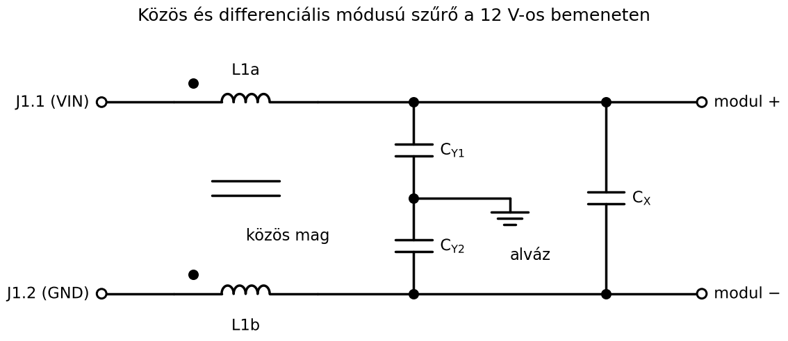

Ennek az alfejezetnek a végére:
Építünk a Valós induktivitás és ferritgyöngy, a Rezonancia, jóság és sávszűrők, Az EMC alapjai: forrás, csatolás, vevő és a Csatolási mechanizmusok és áthallás anyagára.
A szenzormodulon a buck 500 kHz-es hullámossága eljut egy érzékeny analóg táplálásra, a SW csomópont 5 ns körüli élei pedig (spektrumuk 63,7 MHz-es töréspontjáig csak lassan esik) közös módusú áramként kijuthatnak a 12 V-os kábelre. Közben valaki „biztos, ami biztos” alapon egy 100 nF-os kondenzátort tett egy feszültségszabályzó kimenetére, és a mérés semmit nem változott.
Az utóbbi eset mutatja a fejezet fő üzenetét: egy szűrő csillapítása nem a szűrő tulajdonsága egyedül. Ugyanaz az alkatrész az egyik helyen 50 dB-t ad, a másikon semmit, a harmadikon pedig erősít.
Gondolkodj előre: a szabályzó kimeneti ellenállása 20 mΩ, a terhelés 100 Ω. Mekkora csillapítást ad 1 MHz-en a kimenetre tett, ideális 100 nF? Tippelj, mielőtt tovább olvasol.
A szűrő frekvenciafüggő feszültségosztó. A zavarforrást egy feszültség és a soros impedanciája, a vevőt a terhelőimpedancia írja le. A szűrő kétféle dolgot tehet közéjük: sorosan nagy impedanciát állít a zavar útjába, vagy párhuzamosan könnyebb utat ad neki a visszatérő vezetőre.

Mindkét mozdulat versenyez a már ott lévő impedanciákkal. A párhuzamos elem csak akkor visz el sok áramot, ha jóval könnyebb út, mint a forrás és a terhelés. A soros elem csak akkor fog vissza sokat, ha jóval nagyobb akadály, mint amennyi ellenállás a hurokban amúgy is van. Olyan, mint a vízvezeték mellé nyitott leeresztő: tág főág mellett a vékony leeresztőn alig folyik valami. A hasonlat korlátja, hogy a mi „csöveink” frekvenciafüggők, és együtt rezonálhatnak.
A jóslat válasza: a 100 nF impedanciája 1 MHz-en Ω, a szabályzó kimenete viszont 20 mΩ, vagyis nyolcvanszor könnyebb út. A csillapítás kb. 0,001 dB, gyakorlatilag nulla. Ugyanez a kondenzátor 50 Ω-os forrás és terhelés között 23,9 dB-t ad.

Definíció. A beiktatási csillapítás (insertion loss, IL) megmutatja, hányad részére csökken a terhelésen a zavar feszültsége, amikor a szűrőt a forrás és a terhelés közé iktatjuk:
A pozitív érték csillapítás, a negatív érték erősítés: a szűrővel nagyobb a zavar, mint nélküle. A decibel arány (Decibel, átviteli függvény és Bode-diagram).
Egy párhuzamos elemre vezessük le. Szűrő nélkül . Az elemmel a forrást a Feszültségosztó, áramosztó és a terhelés hatása alfejezetből ismert módon helyettesíthetjük: a terhelés és a forrás együtt egy belső impedanciájú Thévenin-forrás, amelyet a terhel. A feszültség -szeresére csökken, tehát
A soros elemnél a hurok impedanciája -ről -ra nő, az áram és vele ennek arányában csökken:
Mindkét tört ellenállás/ellenállás, azaz dimenzió nélküli. Az összeadás komplex számokkal történik (Váltakozó áramú hálózatszámítás és teljesítmény): induktív forrás és kapacitív elem esetén az összeg 1-nél kisebb is lehet, ekkor van erősítés.
A két képletből közvetlenül olvasható a szabály:
Szavakkal: a szűrő az illesztetlenséget használja ki: a zavar frekvenciáján szándékosan nem illeszkedik a környezetéhez.
és frekvenciafüggő, ritkán pontosan ismert. Nagyságrendi támpont: egy tápsín vagy egy nagy kondenzátor mΩ–Ω, egy logikai kimenet néhány tíz Ω, egy érzékelő vagy műveleti erősítő bemenete kΩ–MΩ.

| Topológia | Felépítés (forrástól) | Hova való | Meredekség nagy frekvencián | Ár |
|---|---|---|---|---|
| RC | soros R, párhuzamos C | jelvonal, kis áram | 20 dB/dekád | egyenfeszültség-esés |
| LC | soros L, párhuzamos C | kis impedanciából nagyba | 40 dB/dekád | rezonancia, méret |
| π | C, L, C | mindkét oldal nagy | 60 dB/dekád | három alkatrész |
| T | L, C, L | mindkét oldal kicsi | 60 dB/dekád | két tekercs |
A meredekség reaktáns elemenként 20 dB/dekád (Szűrőtervezés alapjai: rendűség, Butterworth és tűrés), de csak azokra az elemekre, amelyek „látnak” megfelelő impedanciát. Számítás 10 MHz-en, ideális elemekkel ( Ω, µH, nF):
| RC | LC | π | T | |
|---|---|---|---|---|
| 1 Ω | 50,1 dB | 46,0 dB | 62,0 dB | 81,8 dB |
| 50 Ω | 53,5 dB | 48,0 dB | 95,8 dB | 52,1 dB |
| 1 kΩ | 70,8 dB | 70,0 dB | 121,8 dB | 70,0 dB |
A T kis, a π nagy impedanciák között nyer; a 121,8 dB-t a parazitáktól és a szórt csatolástól a valóságban nem kapnád meg. Az RC 1 Ω-os oldalak között egyenáramon is 34 dB-t „csillapít”: a hasznos jelet is elveszi. Tápágba ezért ritkán való; jelvonalon bevált, mint a sönt-szűrő 1,6 kΩ + 100 nF tagja ( Hz) vagy az NTC-csomópont 100 nF-ja, ahol az osztó ellenállása adja az R-et, és ezért hőmérséklettől függően 180, 318 vagy 1256 Hz (Elsőrendű szűrők, sávszélesség és felfutási idő). A szűrőkondenzátor a mérő IC földjéhez (AGND) kössön (Földelési stratégiák és visszatérő áramutak).
A pontozott görbéken: a párhuzamos kondenzátor az önrezonanciája fölött tekercsként viselkedik (A valós kondenzátor: ESR, ESL, önrezonancia, élettartam), a soros tekercs a saját rezonanciája fölött kondenzátorként (Valós induktivitás és ferritgyöngy); a csillapítás visszaesik.
Egy kis veszteségű L–C pár rezonanciakör. Az környékén a kimeneten a bemenetnél nagyobb feszültség jelenhet meg; a csúcs nagyságát a jóság adja (Rezonancia, jóság és sávszűrők). A karakterisztikus impedanciával, soros veszteség és párhuzamos terhelés esetén jó közelítés
és ha jóval nagyobb 1-nél, a csúcs kb. dB. A csillapításhoz ellenállás kell abba a hurokba, amelyben rezonanciakor nagy áram kering:

Vigyázz: a kapcsolóüzemű átalakító bemenete elé tett csillapítatlan LC nemcsak erősít, hanem gerjedést is okozhat. A szabályzott átalakító állandó teljesítményt vesz fel, ezért ha a bemeneti feszültsége csökken, az árama nő: kis változásokra negatív ellenállásként viselkedik, és „visszatáplálja” a rezonanciát. Ott a csillapítás nem elhagyható (a stabilitás számítása meghaladja ezt a könyvet).

A ferritgyöngy kis frekvencián tekercs, a hatásos sávjában veszteséges elem: a zavart hővé alakítja (Valós induktivitás és ferritgyöngy). Szűrőben három dologra figyelj:
A 10 µF-os változathoz Ω, ezért 0,33 Ω + 47 µF ágat választva a csúcs eltűnik (alsó panel). A ferrites analóg szigetet a Tápintegritás és hidegítés viszi tovább.
A kábel árama differenciális és közös módusú részre bomlik (Az EMC alapjai: forrás, csatolás, vevő). A két részhez más hurok tartozik, ezért más szűrő kell.
| Differenciális módus | Közös módus | |
|---|---|---|
| áramút | egyik éren oda, a másikon vissza | mindkét éren együtt, vissza az alvázon vagy földön |
| soros elem | tekercs vagy ferrit az egyik (vagy mindkét) éren | közös módusú fojtó |
| párhuzamos elem | X-kondenzátor a két ér között | Y-kondenzátorok érenként az alváz felé |
A közös módusú fojtó két, közös magon lévő, azonos tekercs, csatolási tényezővel (Transzformátor, csatolt tekercsek és kristályok). Közös áramnál a fluxusok összeadódnak: érenként , a két párhuzamos érre együtt . A hasznos, differenciális áramnál a fluxusok kioltják egymást, a hurokban csak a szórási induktivitás marad. Ezért a 12 V-os tápáram nem telíti a magot, a fojtó pedig mégis nagy akadály a közös zavarnak.

Mintaadat: µH tekercsenként, . 1 MHz-en Ω, Ω. Feltételezzük, hogy a közös módusú forrás 100 Ω, a terhelés (a kábel felől) 50 Ω. A soros elem képletével dB. Két 4,7 nF-os Y-kondenzátor a forrás (a modul) felőli oldalon, ahogy a rajzon látszik, a közös áramnak párhuzamosan 9,4 nF (16,9 Ω 1 MHz-en), és a csillapítás 27,7 dB-re nő. Differenciális módusban, 50–50 Ω között a fojtó csak 0,07 dB-t ad.

A fojtó a GND-éren is rajta van: a modul földje nagy frekvencián elválik a J1.2 ponttól. Ezt a Földelési stratégiák és visszatérő áramutak csillagpontjával (NT1 a J1.2-nél) együtt kell eldönteni és a rajzon megjegyzésben rögzíteni.
Az Y-kondenzátor nagysága nem növelhető tetszés szerint. Váltakozó feszültségű környezetben rajta keresztül szivárgóáram folyik az alvázra; ha a védőföld megszakad, ez az áram az embert érheti. Például 4,7 nF 230 V, 50 Hz mellett 0,34 mA. A megengedett érintési áramot a termékbiztonsági szabvány korlátozza (ellenőrizendő: IEC 62368-1), a hálózati X- és Y-helyre pedig csak erre minősített biztonsági kondenzátor tehető (ellenőrizendő: IEC 60384-14). A könyv nem tervez hálózati szűrőt, a 12 V-os egyenáramú modulban ilyen folyamatos áram nincs, de az Y-kondenzátor a feszültségtűrés, a szivárgás és a leválasztási követelmények szerint itt is választandó.
Az árnyék (shield) a kábel vezetőit körülvevő vezető burkolat. Az elektromos tér az árnyékon végződik, a nagyfrekvenciás közös áram pedig az árnyék belső felületén térhet vissza. Mindez csak jó bekötéssel működik.
| Helyzet | Árnyék bekötése | Miért |
|---|---|---|
| kis frekvenciás zavar, a kábel a hullámhosszhoz képest rövid, érzékeny jel | egy végen | két végen földhurok: az árnyékon kiegyenlítő áram folyik (Földelési stratégiák és visszatérő áramutak) |
| nagy frekvencia, a kábel hosszabb kb. -nál | mindkét végen, körben (360°-ban) | a lebegő vég antennaként viselkedik, a visszatérő áramnak zárt út kell |
| mindkettő | egy végen közvetlenül, a másikon kondenzátoron át | nagy frekvencián zárt, egyenáramon nyitott |
A hüvelykujjszabály; 100 MHz-en m, a határ 15 cm. A rövid dróttal bekötött árnyék (copf, pigtail) induktivitás: ha 1 nH/mm-rel becsüljük (mintaadat), egy 30 mm-es copf 30 nH, amely 100 MHz-en Ω, 1 MHz-en csak 0,19 Ω. Az árnyék jóságát nagy frekvencián a bekötés dönti el. A koaxiális kábel kivételével az árnyék ne legyen a jel egyetlen szándékos visszavezetője. A bekötés döntését és indokát írd a rajzra.
Írd a rajzra, például „L1, C_Y1, C_Y2 a J1 mellett; C_Y rövid úton az alvázhoz”.
Továbbvitt eredmény. Szűrőtopológia: a soros elem a kis, a párhuzamos a nagy impedancia felé néz; a beiktatási csillapítás , illetve ; a rezonanciát , ág csillapítja. Erre épít a Tápintegritás és hidegítés, az 1. záróprojekt: védett tápegység 12 V-ról 5 V-ra és 3,3 V-ra és a 2. záróprojekt: érzékelő-illesztő és mérőlánc.
Továbbvitt eredmény. A differenciális módust soros L/ferrit és X-kondenzátor, a közös módust közös módusú fojtó és Y-kondenzátor szűri; az utóbbinak szivárgóáram-korlátja van. Ezt az ESD- és túlfeszültség-védelem az áramkörben és a Tervezési átvizsgálás és átadás a NYÁK-tervezésnek használja.
Továbbvitt eredmény. A szűrő a zavar forrásához vagy a kábelbelépéshez kerül, rövid visszatérő úttal, és ezt a rajzon rögzítjük: Kapcsolási rajz konvenciói és a NYÁK-tervezőnek átadott kényszerek, Tervezési átvizsgálás és átadás a NYÁK-tervezésnek.
Tegyük fel, hogy a modul egy érzékeny, 50 mA-es analóg alrészét a +5V-ról külön +5VA ágon tápláljuk (a példa kedvéért), és az 500 kHz-es hullámosságot legalább 40 dB-lel akarjuk csökkenteni. Adatok (feltételezett, illetve mintaadatok): mΩ (a buck kimenete), Ω; L1 = 4,7 µH, DCR = 0,1 Ω; C1 = 22 µF X5R, 5 V-on ténylegesen 11,4 µF, ESR = 4 mΩ, ESL = 0,8 nH.
Józanész-ellenőrzés: 500 kHz 1,36 dekáddal van fölött, másodrendűnél dB. Egyezik.
Az elkit.emc képletei és az elkit.ac
hálózatmegoldója egymás független ellenőrzései.
import numpy as np
from elkit import ac, emc, eseries, parts, units
print(" Z C = 100 nF L = 1 µH (1 MHz, Z_s = Z_t = Z)")
for z in (0.1, 1.0, 50.0, 1000.0):
il_c = emc.insertion_loss_db(1e6, [emc.shunt(emc.z_capacitor(1e6, 100e-9))], z, z)
il_l = emc.insertion_loss_db(1e6, [emc.series(emc.z_inductor(1e6, 1e-6))], z, z)
print(f"{units.fmt(z, 'Ω'):>7} {il_c:8.1f} dB {il_l:7.1f} dB") Z C = 100 nF L = 1 µH (1 MHz, Z_s = Z_t = Z)
100 mΩ 0.0 dB 29.9 dB
1 Ω 0.4 dB 10.4 dB
50 Ω 23.9 dB 0.0 dB
1 kΩ 49.9 dB 0.0 dBC1 = parts.mlcc("22u_0805_X5R_10V").capacitance(5.0) # mintaadat
def lc_szuro(rd=None, cd=47e-6):
def epit(c, a, b):
c.add_inductor("L1", a, b, 4.7e-6, dcr=0.1)
c.add_real_capacitor("C1", b, "0", C1, esr=0.004, esl=0.8e-9)
if rd:
c.add_resistor("Rd", b, "d", rd)
c.add_capacitor("Cd", "d", "0", cd)
return epit
f = ac.logspace(1e3, 1e6, 400)
print(f"C1 = {units.fmt(C1, 'F')}")
for rd in (None, 0.33, 0.68, 1.5):
il = ac.insertion_loss(lc_szuro(rd), f, 0.02, 100.0)
k = int(np.argmin(il))
at = ac.insertion_loss(lc_szuro(rd), 500e3, 0.02, 100.0)
print(f"R_d = {str(rd):>4}: csúcs {-il[k]:5.1f} dB ({units.fmt(f[k], 'Hz')}), "
f"500 kHz: {at:.1f} dB")C1 = 11.4 µF
R_d = None: csúcs 14.0 dB (21.5 kHz), 500 kHz: 55.2 dB
R_d = 0.33: csúcs 1.6 dB (7.76 kHz), 500 kHz: 55.3 dB
R_d = 0.68: csúcs 0.9 dB (12.4 kHz), 500 kHz: 55.3 dB
R_d = 1.5: csúcs 4.3 dB (19.8 kHz), 500 kHz: 55.2 dBA környéki a legjobb; kisebb és nagyobb érték is rosszabb. Végül a közös módusú fojtó:
z_dm, z_cm = emc.cm_choke_impedances(1e6, 100e-6, 0.99)
y = emc.shunt(emc.z_capacitor(1e6, 2 * 4.7e-9))
print(f"|Z_cm| = {abs(z_cm):.0f} Ω, |Z_dm| = {abs(z_dm):.1f} Ω")
for nev, lanc, zs, zt in (("közös, fojtó", [emc.series(z_cm)], 100, 50),
("közös, Y + fojtó", [y, emc.series(z_cm)], 100, 50),
("differenciális, fojtó", [emc.series(z_dm)], 50, 50)):
print(f"{nev:22s} {emc.insertion_loss_db(1e6, lanc, zs, zt):5.2f} dB")
i_y = emc.capacitor_leakage_current(230, 50, 4.7e-9)
print(f"Y-kondenzátor szivárgóárama (szemléltetés): {units.fmt(i_y, 'A')}")|Z_cm| = 625 Ω, |Z_dm| = 12.6 Ω
közös, fojtó 12.64 dB
közös, Y + fojtó 27.75 dB
differenciális, fojtó 0.07 dB
Y-kondenzátor szivárgóárama (szemléltetés): 340 µAA szűrő frekvenciafüggő osztó, ezért a beiktatási csillapítása a forrás- és terhelésimpedanciától függ: , illetve . A soros elem a kis, a párhuzamos a nagy impedancia felé néz: π nagy, T kis impedanciák közé való. A paraziták nagy frekvencián határt szabnak. A kis veszteségű LC a sajátfrekvenciáján erősít, ezt , ág csillapítja. A differenciális zavart soros L és X-kondenzátor, a közös módusút közös módusú fojtó és Y-kondenzátor szűri; az Y szivárgóárama korlátos. Az árnyék bekötése frekvenciafüggő. A szűrő a zavar forrásához vagy a kábelbelépéshez kerül, rövid visszatérő úttal, és a helyét a rajzon rögzítjük.
Ω. 50–50 Ω: Ω, , 23,9 dB. 1 és 50 Ω: a párhuzamos eredő 0,98 Ω, , 1,4 dB. Egyetlen kis impedanciájú oldal szinte hatástalanná teszi a kondenzátort.
Közös: µH, kΩ. Differenciális: µH, Ω.
Kis impedanciájú forrás, nagy terhelés: soros L a forrás felé, C a terhelésnél. Az esés miatt a DCR legfeljebb Ω. Például L = 4,7 µH (DCR 50 mΩ), C = 4,7 µF tényleges (mintaadat): kHz, becslés dB, jóval a 30 dB fölött. Ω, csillapítás: Ω, µF. A modell (ESR 5 mΩ) csillapítás nélkül kb. 16 dB, csillapítva kb. 1 dB csúcsot ad. Kisebb értékek is megfelelnek, ha a cél csak 30 dB.
A kondenzátor a forrás és a soros ellenállás sorosa, a terheléssel párhuzamosan látja: kΩ, kHz. 100 Hz-en a csillapítás elhanyagolható (kb. 0,02 dB). 1 MHz-en Ω, a csillapítás kb. dB. A forrásellenállás a szűrő része.
100 kHz: km, m, a 2 m-es kábel elektromosan rövid: egy végen (földhurok elkerülése). 100 MHz: cm, mindkét végen, körben. Az 50 mm-es copf 50 nH: 100 kHz-en 31 mΩ, 100 MHz-en 31 Ω.
Végigpróbáljuk a párokat:
sor = [m * 10.0**e for e in (-1, 0) for m in eseries.series_values("E24")]
f = ac.logspace(1e3, 1e6, 300)
for cd in [m * 1e-5 for m in eseries.series_values("E6")]:
csucs, rd = min((-ac.insertion_loss(lc_szuro(r, cd), f, 0.02, 100.0).min(), r)
for r in sor)
print(f"C_d = {units.fmt(cd, 'F'):>5}: legjobb R_d = {rd:.2f} Ω, csúcs {csucs:.1f} dB")
if csucs < 1.0:
breakC_d = 10 µF: legjobb R_d = 1.10 Ω, csúcs 5.6 dB
C_d = 15 µF: legjobb R_d = 0.91 Ω, csúcs 4.1 dB
C_d = 22 µF: legjobb R_d = 0.75 Ω, csúcs 2.8 dB
C_d = 33 µF: legjobb R_d = 0.68 Ω, csúcs 1.6 dB
C_d = 47 µF: legjobb R_d = 0.62 Ω, csúcs 0.8 dBA 47 µF a legkisebb megfelelő érték; a legjobb Ω közelében van. Tűrés miatt hagyj tartalékot.